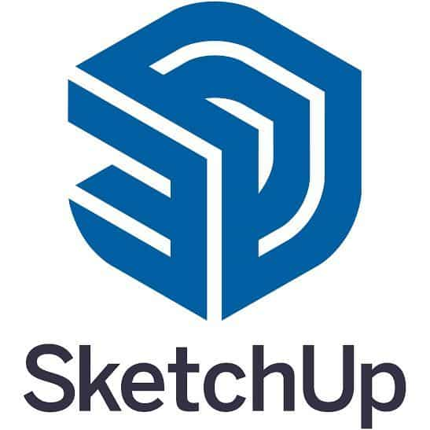

Mes Compétences
-

HTML
Le HTML est le langage fondamental du développement web. Il me permet de structurer le contenu de mes pages en organisant les éléments comme les titres, les textes, les images ou encore les liens.
-

CSS
Le CSS me permet de transformer une structure simple en une interface moderne et agréable. Je l’utilise pour gérer les couleurs, les polices, les espacements, ainsi que les animations.
-

JavaScript
JavaScript est essentiel pour rendre un site interactif et dynamique. Je l’utilise pour créer des effets au survol, des menus déroulants ou manipuler le contenu en temps réel.
-

C#
C# est un langage de programmation orienté objet que j’utilise pour développer des applications robustes et structurées, notamment dans le développement logiciel.
-

PHP
PHP est un langage côté serveur qui me permet de créer des sites web dynamiques, gérer les formulaires, les connexions et les bases de données.
-

Python
Python est un langage polyvalent que j’utilise pour automatiser certaines tâches, développer des scripts ou m’initier à l’analyse de données.
Autres Compétences
-

Photoshop
J’utilise Photoshop pour créer et modifier des visuels, concevoir des maquettes de sites ou retoucher des images.
-

Adobe Premiere Pro
Premiere Pro me permet de réaliser des montages vidéo de qualité, assembler des séquences et ajouter des effets professionnels.
-

SketchUp
Logiciel de modélisation 3D que j’utilise pour créer des objets ou des environnements et visualiser des idées en trois dimensions.
Outils utilisés
-

ChatGPT
Un outil qui m’accompagne dans mon apprentissage pour comprendre des concepts, corriger mes erreurs et optimiser mon code.
-
GitHub
Essentiel pour gérer mes projets, versionner mon code, suivre les modifications et collaborer efficacement.
-
GitHub Copilot
Assistant de programmation qui m’aide à coder plus rapidement via des suggestions intelligentes en temps réel.